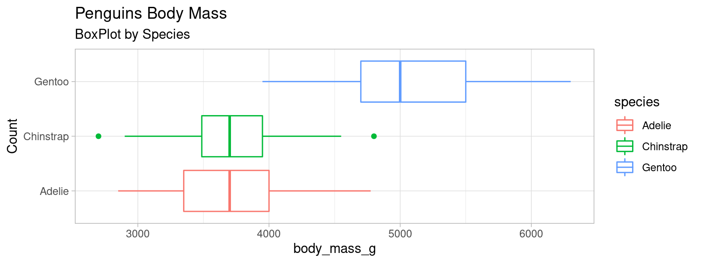

Analyse univariée
Décrire et mesurer la répartition des valeurs que peut prendre une variable : sa distribution (\(\approx\) “histogramme en continu”)
Parfois certaines distributions ressemblent à des distributions bien connues : on parle de lois
e.g. loi normale/gaussienne, loi de Poisson, géométrique, exponentielle, …
Statistique descriptive univariée : la tendance
Moyenne(s), mode , médiane
Moyenne
\(\displaystyle \bar{x} = \frac{1}{n}\sum_{i=0}^{n} x_i\)
Moyenne pondérée
Lors que les valeurs n’ont pas le même poids
par exemple : poids = effectif de la valeur dans la population.
\(\displaystyle \bar{x} = \frac{1}{\sum_{i=0}^n pi}\sum_{i=0}^{n} p_i x_i\)
Avantages et inconvénients de la moyenne
Avantage
Chaque valeur compte
Inconvénients
- sensibilité aux valeurs extrèmes
- pas de signification sur les valeurs discrètes (e.g. 2.5 enfants par femme)
\(\rightarrow\) exclure les outliers
\(\rightarrow\) utiliser un autre estimateur
\(\rightarrow\) étudier la distribution des valeurs (e.g. cas bimodal) et opérer une classification
Moyenne geométrique:
\(\displaystyle \bar{x} = \sqrt[n]{\prod _{i=0}^{n} x_i}\)
Moins sensible à la présence de valeurs extrèmes
Moyenne quadratique (RMS)
\(\displaystyle \bar{x} = \sqrt{\frac{1}{n}\sum _{i=0}^{n} x_i^2}\)
Cas particulier : Moyenne glissante
Moyenne calculée sur une fenètre de \(n\) valeurs consécutives.
e.g. on reçoit une mesure chaque seconde, très bruitée, et on désire afficher 10 minutes de signal lissé dans le temps
\(\rightarrow\) on calcule pour chaque point du signal, la moyenne sur 10 valeurs consécutives (5 en avant , 5 en arrière)
le Mode
Mode : valeur la plus fréquente (effectif max.) de la série de valeurs que prend une variable.
⚠ si variable quantitative continue : faire une classification . Dans ce cas, le mode est la moyenne des valeurs min et max des bornes de la classe de plus grand effectif.
Avantages et inconvénients du mode
Avantages
Peu sensible aux valeurs extrêmes (moins sensible que la moyenne)
Signification concrète : la situation la plus fréquente
Inconvénients
Ne dépends pas de toutes les observations : la modification d’une seule valeur n’entraîne pas une modification du mode
la Médiane
Médiane : valeur qui partage une série de valeurs en deux sous-ensembles d’égal effectif
Comme en géométrie, la médiane est la valeur de la variable qui est la plus proche de toutes les autres.
Etapes de calcul
Ordonner les valeurs selon un ordre croissant
Calculer le rang \(i=\frac{n+1}{2}\)
si \(n\) impair, la valeur médiane existe dans la série statistique
si \(n\) pair, la valeur médiane est entre deux valeurs et est égale à la moyenne de ces deux valeurs
Avantages et inconvénients de la médiane
Avantages
Plus pertinente que la moyenne
Peu sensible aux valeurs extrêmes
A une signification concrète : divise en deux la distribution : un individu sur deux a une valeur inférieure ou supérieure à celle-ci
Inconvénient
Ne dépend pas de toutes les observations : la modification d’une seule valeur n’entraine pas une modification de la médiane
Quelle mesure choisir ?
Tout dépend de la distribution !
\(\rightarrow\) Toujours afficher l’histogramme ou la distribution de densité
Le mode est privilégié pour les valeurs nominales et si on désire considérer «le cas le plus fréquent»
Distribution sans longue traîne ?
\(\rightarrow\) moyenne et médiane
Plusieurs modes dans la distribution ?
\(\rightarrow\) classification puis médiane / moyenne par classe
Distribution bimodale

Que choisir : moyenne ou médiane ?
Distribution unimodale symétrique
xx <- data.frame(value=rnorm(2900,mean = 5, sd = 1))
plot1 <- ggplot(xx)+
geom_line(aes(x = value),stat = "density", color="#44DD99", lwd= 1.3)+
geom_vline(xintercept = mean(xx$value), color="red")+
geom_vline(xintercept = median(xx$value) + 0.02,color="blue")+
annotate("text", x=c(4.5,5.5), y=c(0.2,0.2), colour=c("red","blue"),label=c("mean", "median"))+
theme_light()
plot1
Histogramme et distribution en R
la fonction hist affiche un histogramme d’un vecteur numerique:
x <- rnorm(2500) #init
hist(x)
Histogramme et distribution en R
un histogramme n’a pas de sens pour une variable qualitative.
On peut utiliser barplot,⚠ mais ce n’est plus une distribution !
x <- sample(month.name, 2500, replace=T)
tx <- table(x)
barplot(tx , las=2)
Statistique descriptive univariée : la dispersion
Variance, écart-type, Coeff. de variation.
La dispersion statistique
end
mydataset <- data.frame(X=rnorm(900), Y=rnorm(900))
plot1 <- ggplot(mydataset)+
geom_point(aes(x=X, y=Y), fill="#44DD99", color="#666666", shape=21)+
coord_equal()+theme_light()
plot1
Variance et Écart-type
La variance est la somme des écarts carrés à la moyenne rapporté à l’effectif
\(\displaystyle var_X= \frac{1}{n}\sum_{i=1}^{n}(x_i -\bar{x})^2\)
Avec : * \(X\) une variable * \(x_i\) les valeurs de la variables * \(\bar{x}\) la moyenne de \(X\) * \(n\) l’effectif
\(\sigma_X = \sqrt{var_X}\) : l’écart type est la racine carrée de la variance
Variance et Écart-type
Variance et écart-type rendent compte de la dispersion de la variable autour de sa moyenne.
Ils sont sensibles aux valeurs extrèmes et toujours positifs.
Si \(var_X = 0\) ou \(\sigma_X = 0\) , alors \(X\) est constante.
Un écart-type faible indique que les valeurs sont réparties de façon homogène autour de la moyenne.
Précaution
⚠Variance et écart type n’ont d’intérêt que pour qualifier des distributions unimodales, et (à peu près) symétriques
(i.e. proche de la Gaussienne)
Lorsque \(X\sim \mathscr{N}(\mu,\sigma)\)

\([-\sigma;\sigma] \approx \frac{2}{3}\) de l’effectif
\([-2\sigma;2\sigma] \approx\) 95% de l’effectif
Quantiles
La médiane sépare une population en deux classes d’égal effectif selon la valeur d’une variable (quantitative).
Les quantiles séparent une population en \(n\) classes d’égal effectif
Les quartiles d’une population selon une variable \(X\) sont trois valeurs, \(Q_1,Q_2,Q_3\) qui séparent la population en quatre classes d’égal effectif.
- 25% des valeurs de \(X\) sont strictement inférieures à \(Q_1\)
- 50% des valeurs de \(X\) sont strictement inférieures à \(Q_2\) (médiane)
- 75% des valeurs de \(X\) sont strictement inférieures à \(Q_3\)
Déciles
Les déciles sont les 9 quantiles \(Q_1,Q_2,\dots,Q_9\) qui séparent une population selon la valeur d’une variable quantitative en 10 classes d’égal effectif.
Ecarts inter-quartiles et inter-déciles
Deux mesures de la dispersion d’une distribution :
Écart inter-quartile: \(Q_3-Q_1\) , capture 50% des valeurs de la population les plus proches de la médiane
Écart inter-déciile: \(Q_9-Q_1\) , capture 80% des valeurs de la population les plus proches de la médiane
Les boîtes à moustaches (boxplots)
représentation courante de la dispersion d’une variable à l’aide de quartiles
plot1 <- ggplot(iris)+
geom_boxplot(aes(y=Sepal.Width,x= Species) ) + coord_flip()
plot1

Interprétation des boxplots
- La marque centrale de la boîte est la médiane
- Les bords de la boîte sont les quartiles \(Q_1\) et \(Q_3\)
- Les extrémités des moustaches vont jusqu’à la plus grande (resp. la plus petite ) valeur inférieure (resp. supérieure) à 1.5 fois l’écart interquartile
- Les valeurs qui dépassent les moustaches sont affichées sous formes de points

Avantages et inconvénient des quantiles
Avantages
Peu sensibles aux distributions aplaties et aux valeurs extrèmes
L’écart inter-quantile est plus robuste que l’écart-type
Inconvénients
Parfois délicat pour les variables quantitatives discrètes
Les écarts inter-quantiles négligent l’influence des valeurs extrèmes sur la distribution
Le coefficient de variation
Le coefficient de variation (\(CV\)) est une autre mesure de dispersion.
C’est le ratio entre l’écart-type \(\sigma_x\) et la moyenne \(\bar{x}\) d’une variable quantitative \(X\).
\(\displaystyle CV(X)=\frac{\sigma_x}{\bar{x}}\)
Plus il est important , plus la dispersion est grande.
Plus il est proche de 0, plus les données sont homogènes.
Il souffre des mêmes inconvénients que la moyenne et l’écart-type : sensibilité aux valeurs extrèmes.
Comparaison de dispersion de deux distributions de valeurs.
Exemple : deux communes versent des aides aux entreprises locales.
Commune A : moyenne = 390 euros, \(\sigma\) = 30 euros
Commune B : moyenne = 152 euros, \(\sigma\) = 8 euros
Pour quelle commune les aides sont les plus homogènes?
On pourrait aussi comparer des distribution de valeurs exprimées dans des unités différentes !
(Mauvaise) Comparaison visuelle de deux distributions
Pour échantilloner dans une loi normale : fonction rnorm
A <- rnorm(n = 10000, mean = 390, sd = 30)
B <- rnorm(n = 10000, mean = 152, sd = 8)
par(mfrow=c(1, 2)) #2 graphes en colonnes
hist(A, probability = T)
lines(density(A), col="red")
hist(B, probability = T)
lines(density(B), col="red")
Qu’est ce qui ne va pas ?
Comparaison visuelle de dispersion de deux distributions
Il faut une échelle commune !
A <- rnorm(n = 10000, mean = 390, sd = 30)
B <- rnorm(n = 10000, mean = 152, sd = 8)
par(mfrow=c(1, 2))
hist(A, probability = T, xlim = c(50,600), ylim = c(0,0.05))
lines(density(A), col="red")
hist(B, probability = T,xlim = c(50,600), ylim = c(0,0.05))
lines(density(B), col="red")

Asymétrie des distributions.

les Coefficients de Pearson
Deux moyens simples d’estimer l’asymétrie
\(\displaystyle C_1 = \frac{\bar{x} - mode(X)}{\sigma_x}\)
\(\displaystyle C_2 = \frac{3(\bar{x} - mediane(X))}{\sigma_x}\)
Interprétation des coefficients d’asymétrie
- si le coefficient nul, la distribution est symétrique
- si le coefficient est négatif, la distribution est déformée à gauche de la médiane (sur-représentation de valeurs faibles, à gauche)
- si le coefficient est positif, la distribution est déformée à droite de la médiane (sur-représentation de valeurs fortes, à droite)
Le coefficient de Fischer
Ce coefficient est le moment d’ordre 3 de la variable \(X\) ( de moyenne \(\mu\) et d’écart-type \(\sigma\)) centrée réduite
\(\displaystyle skewness'=\mathbb{E}\bigg[\bigg(\frac{X-\mu}{\sigma}\bigg)^3\bigg]=\frac{\sum_{i=0}^{n} (x_i - \bar{x})^3}{n\sigma^3}\)
L’aplatissement des distributions (kurtosis)

Courbe piquée: Peu de variation, distribution relativement homogène, beaucoup de valeurs égales ou proches de la moyenne.
Courbe applatie: Variations importantes, distribution relativement hétérogène, beaucoup de valeurs s’éloignent de la moyenne.
Coefficient d’applatissement : kurtosis
Coefficient non normalisé :
\(\displaystyle K=\frac{\sum_{i=1}^{n}(x_i -\bar{x})^4}{n\sigma^4}\)
Si la distribution est normale , \(K= 3\)
Si \(K>3\), la distribution est plus applatie
Si \(K<3\), la distribution est moins applatie
On normalise parfois en considérant \(K'=K-3\) (excès d’applatissement)
Représentation d’une distribution et Échelle de couleurs
Distribution et Échelle de couleurs
Pour une variable quanti. continue qu’on souhaite colorer, il n’est pas toujours possible de graduer une échelle de couleur continue.
Il faut (souvent) classer les valeurs en catégories. Le nombre de classes et les méthodes de classification varient.
En général
- 5,7 ou 9 classes :
- \(<5\) trop peu de détails
- \(>9\) difficile de distinguer les classes proches
Distribution et Échelle de couleurs
Méthodes de classifications de Qgis
- Ruptures Naturelles (Jenks) : Minimisation des variances intra-classe et maximisation des variances inter-classe
- Effectifs égaux (quantiles)
- Intervalles égaux
- Ecart-type : intervales de 1 ou 0.5 \(\sigma\)
- Jolies ruptures : intervalle égaux “décalés” pour faire joli : nombre ronds, puissances de 10, …
Exemple avec la surface des quartiers de Paris
quartiers <- st_read("quartier_paris.shp")
plot(quartiers$geometry)
Allure de la distribution
hist(quartiers$surface,breaks = 15)

Affichage par défaut :
par(mar=c(0,0,0,0))
plot(quartiers["surface"])

par defaut la fonction plot de sf utilise la méthode “pretty” avec 10 ruptures (\(9\pm1\) classes) => ce sont des intervalles égaux.
Jenks à 5 , 7 et 9 classes
Jenks à 5 , 7 et 9 classes
Code R correspondant :
par(mar=c(0,0,0,0))
plot(quartiers["surface"], breaks="jenks", nbreaks = 5, main = "5 breaks")
plot(quartiers["surface"], breaks="jenks", nbreaks = 7, main="7 breaks")
plot(quartiers["surface"], breaks="jenks", nbreaks = 9, main= "9 breaks")
Effectifs égaux

Intervalles égaux (7)
par(mar=c(0,0,0,0))
plot(quartiers["surface"], breaks="equal", nbreaks = 7, main = "Intervalles égaux")

Ecart types
par(mar=c(0,0,0,0))
plot(quartiers["surface"], breaks="sd",main = "Écart-type")
\(\approx\) méthode des jolies ruptures sur variable centrée réduite
Guides de choix de la méthode de classification
Pour les classification manuelles :
les classes doivent contenir toutes les valeurs, être sans recouvrement, contigües et distinctes.
Procéder par essai-erreur
attention aux décimales et aux extrémités
si distribution uniforme \(\rightarrow\) Intervalles égaux
si distribution asymétrique \(\rightarrow\) Effectifs égaux, Jenks , progression géométrique (rare).
si distribution symétrique \(\rightarrow\) Écart-type, intervalle égaux
Autres classifications
consultez la doc de la fonction classInt du package du même nom
Variables centrées-réduites
⚠ En principe, uniquement lorsque la distribution d’une variable est proche d’une gaussienne ⚠
Centrer : soustraire la moyenne
Réduire : diviser par l’écart-type
une variable centrée réduite est exprimée en «écarts-types à la moyenne»
\(\rightarrow\) permet de repérer les valeurs extrèmes (\(<2\sigma\) ou \(>2\sigma\))
\(\rightarrow\) utile pour comparer des individus selon un grand nombre de variables (tableaux de synthèse)
Visualiser une distribution
- Histogramme
- Distribution
- BoxPlot
- Violin plot
- Pyramides (histogrammes jusxtaposés)
- Polygones de fréquences
- Distribution cumulée , Fonction de répartition , CDF
- Dot strip plot
Histogramme : Code R + ggplot
library(palmerpenguins)
data(package = 'palmerpenguins')
mydata <- penguins
histo_mass <- ggplot(mydata)+
geom_histogram(aes(x=body_mass_g), fill="darkorchid4", color="darkgray", bins=50)+
labs(title = "Penguins Body Mass", subtitle = "Histogram")+
ylab("Count")+theme_light()
histo_mass
Distribution : Code R + ggplot
⚠ ce n’est pas exactement une probabilité, mais une densité de probabilité. Pour obtenir la probabilité , il faut intégrer sur un petit \(dx\).
library(palmerpenguins)
data(package = 'palmerpenguins')
mydata <- penguins
distrib_mass <- ggplot(mydata)+
geom_density(aes(x=body_mass_g), fill="darkorchid4", color="darkgray")+
geom_vline(aes(xintercept=mean(body_mass_g, na.rm = T)), color="black", size=0.4, linetype="dashed" )+
labs(title = "Penguins Body Mass", subtitle = "Probability density and mean")+
ylab("Count")+theme_light()
distrib_mass
BoxPlot : Code R + ggplot
library(palmerpenguins)
data(package = 'palmerpenguins')
mydata <- penguins
boxplot_mass <- ggplot(mydata)+
geom_boxplot(aes(x=body_mass_g, y=species, color=species))+
labs(title = "Penguins Body Mass", subtitle = "BoxPlot by Species")+
ylab("Count")+theme_light()
boxplot_mass

Violin plot
Dsitribution+miroir Utile pour des distributions complexes, e.g. mal résumées par la moyenne et la dispersion.
library(palmerpenguins)
data(package = 'palmerpenguins')
mydata <- penguins
violin_mass <- ggplot(mydata)+
geom_violin(aes(y=body_mass_g, x=species, fill=species), color="gray", trim=F)+
labs(title = "Penguins Body Mass", subtitle = "ViolinPlot by Species")+
ylab("Count")+theme_light()
violin_mass
Violin plot et Boxplot : Code R + ggplot 2
library(palmerpenguins)
data(package = 'palmerpenguins')
mydata <- penguins
violin_mass <- ggplot(mydata)+
geom_violin(aes(y=body_mass_g, x=species, fill=species), color="lightgray", trim=F)+
geom_boxplot(aes(y=body_mass_g, x=species, fill=species), color="black", fill="#eeeeee" ,width=0.1)+
labs(title = "Penguins Body Mass", subtitle = "ViolinPlot and Boxplot by Species")+
ylab("Count")+theme_light()
violin_mass
Pyramides (histogrammes juxtaposés)
lorsqu’une des variables est qualitatives à deux modalités :
library(palmerpenguins)
data(package = 'palmerpenguins')
mydata <- penguins
pyramide_mass <- ggplot(mydata, aes(fill = sex)) +
geom_bar(data = subset(mydata, sex == "female"), stat = "bin", aes(x=body_mass_g, y=..count..*(-1)), color="grey") +
geom_bar(data = subset(mydata, sex == "male"), stat = "bin", aes(x=body_mass_g), color="grey") +
scale_y_continuous(labels = paste0(as.character(c(seq(20, 0, -10), seq(10, 20, 10))))) +
ylab("count")+ coord_flip()+
labs(title = "Penguins Body Mass", subtitle = "Pyramid Plot by sex")+
theme_light()
pyramide_mass
Polygones de fréquences
“Histogramme en courbe”
Utile pour comparer plusieurs distributions
library(palmerpenguins)
data(package = 'palmerpenguins')
mydata <- penguins
freqpoly_mass <- ggplot(mydata)+
geom_freqpoly(aes(x=body_mass_g, color=species), bins=50)+
labs(title = "Penguins Body Mass", subtitle = "Frequence Polygons")+
ylab("Count")+theme_light()
freqpoly_mass

Distribution cumulée , Fonction de répartition , CDF
Courbe \(x,y\),
en \(x\) la valeur de la variable \(V\), en \(y\) la probabilité empririque d’avoir dans la population, un individu pour lequel \(V\leq x\)
i.e. c’est la fonction
\(F_{V}(x)=\mathbb {P} (V\leq x)\)

Distribution cumulée , Fonction de répartition , CDF
Permet de superposer les CDF de sous groupes de la population. ici : la race des penguins

Distribution cumulée simple : Code R + ggplot
library(palmerpenguins)
data(package = 'palmerpenguins')
mydata <- penguins
plot_mass <- ggplot(mydata)+
stat_ecdf(aes(x= body_mass_g),color="darkorchid4")+
labs(title = "Penguins Body Mass", subtitle = "Cumulative Distribution Function")+
ylab("Probability")+theme_light()
plot_mass

Distribution cumulée par groupe : Code R + ggplot
library(palmerpenguins)
data(package = 'palmerpenguins')
mydata <- penguins
plot_mass <- ggplot(mydata)+
stat_ecdf(aes(x= body_mass_g,color=species))+ #on affecte la couleur à la variable modale
labs(title = "Penguins Body Mass", subtitle = "Cumulative Distribution Function")+
ylab("Probability")+theme_light()
plot_mass